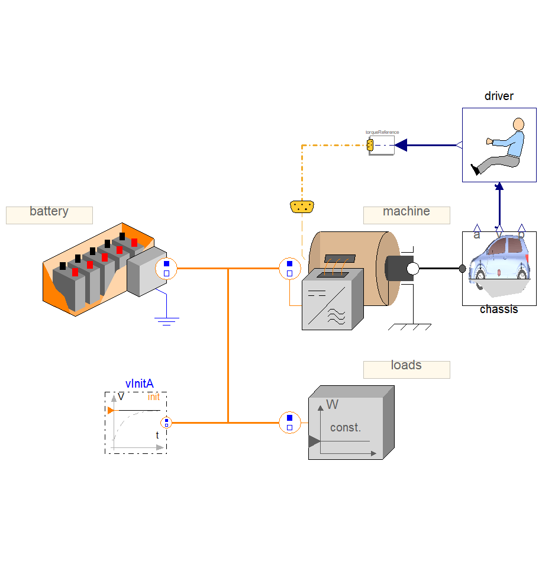
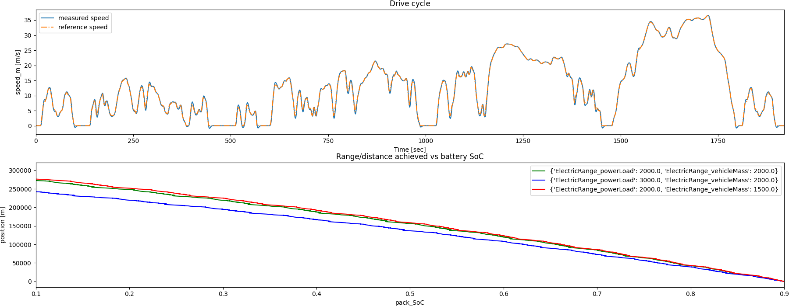

Note
Go to the end to download the full example code
Parametric dynamic twin evaluation#
This example shows how you can use PyTwin to load and evaluate a twin model and simulate multiple parametric variations. The model is used for determining the range of an electric vehicle. The vehicle is represented by a battery, the electric loads of the vehicle, and an electric machine connected to a simple 1D chassis. The driver controls the vehicle speed to follow a repeated sequence of the WLTP cycle (class 3). The mass of the vehicle and the electric power loads are parameterized so that their effects on the overall electric range can be seen.
{kind=link}
# sphinx_gallery_thumbnail_path = '_static/electricRange.png'
Perform required imports#
Perform required imports, which include downloading and importing the input files.
import matplotlib.pyplot as plt
import pandas as pd
from pytwin import TwinModel, download_file
twin_file = download_file("ElectricRange_23R1_other.twin", "twin_files", force_download=True)
Define auxiliary functions#
Define auxiliary functions for comparing and plotting the results from different parametric simulations executed on the same twin model.
def plot_result_comparison(results: list[pd.DataFrame], sweep: list[dict]):
"""Compare the results obtained from the different parametric simulations executed
on the same TwinModel. The results datasets are provided as Pandas dataframes. The
function plots the results for a few variables of particular interest."""
pd.set_option("display.precision", 12)
pd.set_option("display.max_columns", 20)
pd.set_option("display.expand_frame_repr", False)
color = ["g", "b", "r"]
# Output ordering: time, battery_loss, loads_loss, machine_loss, pack_SoC, position,
# speed_m, speed_ref, tau_ref, tau_sns
x0_ind = 0
y0_ind = 6
z0_ind = 7
x1_ind = 4
y1_ind = 5
# Plot the runtime outputs for two results: the drive cycle and the distance
# achieved versus the battery state of the charge for all parametric variations
fig, ax = plt.subplots(ncols=1, nrows=2, figsize=(18, 7))
fig.subplots_adjust(hspace=0.5)
fig.set_tight_layout({"pad": 0.0})
axes0 = ax[0]
results[0].plot(x=x0_ind, y=y0_ind, ax=axes0, label="{}".format("measured speed"))
results[0].plot(x=x0_ind, y=z0_ind, ax=axes0, ls="-.", label="{}".format("reference speed"))
axes0.set_title("Drive cycle")
axes0.set_xlabel(results[0].columns[x0_ind] + " [sec]")
axes0.set_ylabel(results[0].columns[y0_ind] + " [m/s]")
axes0.set_xlim((0, 32 * 60))
axes1 = ax[1]
for ind, dp in enumerate(sweep):
# Plot runtime results
results[ind].plot(x=x1_ind, y=y1_ind, ax=axes1, color=color[ind], label="{}".format(dp))
axes1.set_title("Range/distance achieved vs battery SoC")
axes1.set_xlabel(results[0].columns[x1_ind])
axes1.set_xlim((0.1, 0.9))
axes1.set_ylabel(results[0].columns[y1_ind] + " [m]")
# Show plot
plt.show()
Load the twin runtime and instantiate it#
Load the twin runtime and instantiate it.
Loading model: C:\Users\ansys\AppData\Local\Temp\TwinExamples\twin_files\ElectricRange_23R1_other.twin
Define inputs and simulation settings#
Define the inputs and simulation settings.
time_step = 1.0
time_end = 24000.0 # Simulate the model for 400 minutes
print("Twin parameters : {}".format(twin_model.parameters))
dp1 = {"ElectricRange_powerLoad": 2000.0, "ElectricRange_vehicleMass": 2000.0}
dp2 = {"ElectricRange_powerLoad": 3000.0, "ElectricRange_vehicleMass": 2000.0}
dp3 = {"ElectricRange_powerLoad": 2000.0, "ElectricRange_vehicleMass": 1500.0}
sweep = [dp1, dp2, dp3]
Twin parameters : {'ElectricRange_powerLoad': 2000.0, 'ElectricRange_vehicleMass': 2000.0}
Simulate the twin for each set of parameter values#
Simulate the twin for each set of parameters values for each time step and collect corresponding output values.
results = []
for dp in sweep:
# Initialize twin model with the correct parameters values and collect
# initial output values
twin_model.initialize_evaluation(parameters=dp)
outputs = [twin_model.evaluation_time]
for item in twin_model.outputs:
outputs.append(twin_model.outputs[item])
sim_output = [outputs]
while twin_model.evaluation_time < time_end:
step = time_step
twin_model.evaluate_step_by_step(step_size=step)
outputs = [twin_model.evaluation_time]
for item in twin_model.outputs:
outputs.append(twin_model.outputs[item])
sim_output.append(outputs)
if twin_model.evaluation_time % 1000 == 0.0:
print(
"Simulating the model with parameters {}, evaluation time = {}".format(dp, twin_model.evaluation_time)
)
sim_results = pd.DataFrame(sim_output, columns=["Time"] + list(twin_model.outputs), dtype=float)
results.append(sim_results)
Simulating the model with parameters {'ElectricRange_powerLoad': 2000.0, 'ElectricRange_vehicleMass': 2000.0}, evaluation time = 1000.0
Simulating the model with parameters {'ElectricRange_powerLoad': 2000.0, 'ElectricRange_vehicleMass': 2000.0}, evaluation time = 2000.0
Simulating the model with parameters {'ElectricRange_powerLoad': 2000.0, 'ElectricRange_vehicleMass': 2000.0}, evaluation time = 3000.0
Simulating the model with parameters {'ElectricRange_powerLoad': 2000.0, 'ElectricRange_vehicleMass': 2000.0}, evaluation time = 4000.0
Simulating the model with parameters {'ElectricRange_powerLoad': 2000.0, 'ElectricRange_vehicleMass': 2000.0}, evaluation time = 5000.0
Simulating the model with parameters {'ElectricRange_powerLoad': 2000.0, 'ElectricRange_vehicleMass': 2000.0}, evaluation time = 6000.0
Simulating the model with parameters {'ElectricRange_powerLoad': 2000.0, 'ElectricRange_vehicleMass': 2000.0}, evaluation time = 7000.0
Simulating the model with parameters {'ElectricRange_powerLoad': 2000.0, 'ElectricRange_vehicleMass': 2000.0}, evaluation time = 8000.0
Simulating the model with parameters {'ElectricRange_powerLoad': 2000.0, 'ElectricRange_vehicleMass': 2000.0}, evaluation time = 9000.0
Simulating the model with parameters {'ElectricRange_powerLoad': 2000.0, 'ElectricRange_vehicleMass': 2000.0}, evaluation time = 10000.0
Simulating the model with parameters {'ElectricRange_powerLoad': 2000.0, 'ElectricRange_vehicleMass': 2000.0}, evaluation time = 11000.0
Simulating the model with parameters {'ElectricRange_powerLoad': 2000.0, 'ElectricRange_vehicleMass': 2000.0}, evaluation time = 12000.0
Simulating the model with parameters {'ElectricRange_powerLoad': 2000.0, 'ElectricRange_vehicleMass': 2000.0}, evaluation time = 13000.0
Simulating the model with parameters {'ElectricRange_powerLoad': 2000.0, 'ElectricRange_vehicleMass': 2000.0}, evaluation time = 14000.0
Simulating the model with parameters {'ElectricRange_powerLoad': 2000.0, 'ElectricRange_vehicleMass': 2000.0}, evaluation time = 15000.0
Simulating the model with parameters {'ElectricRange_powerLoad': 2000.0, 'ElectricRange_vehicleMass': 2000.0}, evaluation time = 16000.0
Simulating the model with parameters {'ElectricRange_powerLoad': 2000.0, 'ElectricRange_vehicleMass': 2000.0}, evaluation time = 17000.0
Simulating the model with parameters {'ElectricRange_powerLoad': 2000.0, 'ElectricRange_vehicleMass': 2000.0}, evaluation time = 18000.0
Simulating the model with parameters {'ElectricRange_powerLoad': 2000.0, 'ElectricRange_vehicleMass': 2000.0}, evaluation time = 19000.0
Simulating the model with parameters {'ElectricRange_powerLoad': 2000.0, 'ElectricRange_vehicleMass': 2000.0}, evaluation time = 20000.0
Simulating the model with parameters {'ElectricRange_powerLoad': 2000.0, 'ElectricRange_vehicleMass': 2000.0}, evaluation time = 21000.0
Simulating the model with parameters {'ElectricRange_powerLoad': 2000.0, 'ElectricRange_vehicleMass': 2000.0}, evaluation time = 22000.0
Simulating the model with parameters {'ElectricRange_powerLoad': 2000.0, 'ElectricRange_vehicleMass': 2000.0}, evaluation time = 23000.0
Simulating the model with parameters {'ElectricRange_powerLoad': 2000.0, 'ElectricRange_vehicleMass': 2000.0}, evaluation time = 24000.0
Simulating the model with parameters {'ElectricRange_powerLoad': 3000.0, 'ElectricRange_vehicleMass': 2000.0}, evaluation time = 1000.0
Simulating the model with parameters {'ElectricRange_powerLoad': 3000.0, 'ElectricRange_vehicleMass': 2000.0}, evaluation time = 2000.0
Simulating the model with parameters {'ElectricRange_powerLoad': 3000.0, 'ElectricRange_vehicleMass': 2000.0}, evaluation time = 3000.0
Simulating the model with parameters {'ElectricRange_powerLoad': 3000.0, 'ElectricRange_vehicleMass': 2000.0}, evaluation time = 4000.0
Simulating the model with parameters {'ElectricRange_powerLoad': 3000.0, 'ElectricRange_vehicleMass': 2000.0}, evaluation time = 5000.0
Simulating the model with parameters {'ElectricRange_powerLoad': 3000.0, 'ElectricRange_vehicleMass': 2000.0}, evaluation time = 6000.0
Simulating the model with parameters {'ElectricRange_powerLoad': 3000.0, 'ElectricRange_vehicleMass': 2000.0}, evaluation time = 7000.0
Simulating the model with parameters {'ElectricRange_powerLoad': 3000.0, 'ElectricRange_vehicleMass': 2000.0}, evaluation time = 8000.0
Simulating the model with parameters {'ElectricRange_powerLoad': 3000.0, 'ElectricRange_vehicleMass': 2000.0}, evaluation time = 9000.0
Simulating the model with parameters {'ElectricRange_powerLoad': 3000.0, 'ElectricRange_vehicleMass': 2000.0}, evaluation time = 10000.0
Simulating the model with parameters {'ElectricRange_powerLoad': 3000.0, 'ElectricRange_vehicleMass': 2000.0}, evaluation time = 11000.0
Simulating the model with parameters {'ElectricRange_powerLoad': 3000.0, 'ElectricRange_vehicleMass': 2000.0}, evaluation time = 12000.0
Simulating the model with parameters {'ElectricRange_powerLoad': 3000.0, 'ElectricRange_vehicleMass': 2000.0}, evaluation time = 13000.0
Simulating the model with parameters {'ElectricRange_powerLoad': 3000.0, 'ElectricRange_vehicleMass': 2000.0}, evaluation time = 14000.0
Simulating the model with parameters {'ElectricRange_powerLoad': 3000.0, 'ElectricRange_vehicleMass': 2000.0}, evaluation time = 15000.0
Simulating the model with parameters {'ElectricRange_powerLoad': 3000.0, 'ElectricRange_vehicleMass': 2000.0}, evaluation time = 16000.0
Simulating the model with parameters {'ElectricRange_powerLoad': 3000.0, 'ElectricRange_vehicleMass': 2000.0}, evaluation time = 17000.0
Simulating the model with parameters {'ElectricRange_powerLoad': 3000.0, 'ElectricRange_vehicleMass': 2000.0}, evaluation time = 18000.0
Simulating the model with parameters {'ElectricRange_powerLoad': 3000.0, 'ElectricRange_vehicleMass': 2000.0}, evaluation time = 19000.0
Simulating the model with parameters {'ElectricRange_powerLoad': 3000.0, 'ElectricRange_vehicleMass': 2000.0}, evaluation time = 20000.0
Simulating the model with parameters {'ElectricRange_powerLoad': 3000.0, 'ElectricRange_vehicleMass': 2000.0}, evaluation time = 21000.0
Simulating the model with parameters {'ElectricRange_powerLoad': 3000.0, 'ElectricRange_vehicleMass': 2000.0}, evaluation time = 22000.0
Simulating the model with parameters {'ElectricRange_powerLoad': 3000.0, 'ElectricRange_vehicleMass': 2000.0}, evaluation time = 23000.0
Simulating the model with parameters {'ElectricRange_powerLoad': 3000.0, 'ElectricRange_vehicleMass': 2000.0}, evaluation time = 24000.0
Simulating the model with parameters {'ElectricRange_powerLoad': 2000.0, 'ElectricRange_vehicleMass': 1500.0}, evaluation time = 1000.0
Simulating the model with parameters {'ElectricRange_powerLoad': 2000.0, 'ElectricRange_vehicleMass': 1500.0}, evaluation time = 2000.0
Simulating the model with parameters {'ElectricRange_powerLoad': 2000.0, 'ElectricRange_vehicleMass': 1500.0}, evaluation time = 3000.0
Simulating the model with parameters {'ElectricRange_powerLoad': 2000.0, 'ElectricRange_vehicleMass': 1500.0}, evaluation time = 4000.0
Simulating the model with parameters {'ElectricRange_powerLoad': 2000.0, 'ElectricRange_vehicleMass': 1500.0}, evaluation time = 5000.0
Simulating the model with parameters {'ElectricRange_powerLoad': 2000.0, 'ElectricRange_vehicleMass': 1500.0}, evaluation time = 6000.0
Simulating the model with parameters {'ElectricRange_powerLoad': 2000.0, 'ElectricRange_vehicleMass': 1500.0}, evaluation time = 7000.0
Simulating the model with parameters {'ElectricRange_powerLoad': 2000.0, 'ElectricRange_vehicleMass': 1500.0}, evaluation time = 8000.0
Simulating the model with parameters {'ElectricRange_powerLoad': 2000.0, 'ElectricRange_vehicleMass': 1500.0}, evaluation time = 9000.0
Simulating the model with parameters {'ElectricRange_powerLoad': 2000.0, 'ElectricRange_vehicleMass': 1500.0}, evaluation time = 10000.0
Simulating the model with parameters {'ElectricRange_powerLoad': 2000.0, 'ElectricRange_vehicleMass': 1500.0}, evaluation time = 11000.0
Simulating the model with parameters {'ElectricRange_powerLoad': 2000.0, 'ElectricRange_vehicleMass': 1500.0}, evaluation time = 12000.0
Simulating the model with parameters {'ElectricRange_powerLoad': 2000.0, 'ElectricRange_vehicleMass': 1500.0}, evaluation time = 13000.0
Simulating the model with parameters {'ElectricRange_powerLoad': 2000.0, 'ElectricRange_vehicleMass': 1500.0}, evaluation time = 14000.0
Simulating the model with parameters {'ElectricRange_powerLoad': 2000.0, 'ElectricRange_vehicleMass': 1500.0}, evaluation time = 15000.0
Simulating the model with parameters {'ElectricRange_powerLoad': 2000.0, 'ElectricRange_vehicleMass': 1500.0}, evaluation time = 16000.0
Simulating the model with parameters {'ElectricRange_powerLoad': 2000.0, 'ElectricRange_vehicleMass': 1500.0}, evaluation time = 17000.0
Simulating the model with parameters {'ElectricRange_powerLoad': 2000.0, 'ElectricRange_vehicleMass': 1500.0}, evaluation time = 18000.0
Simulating the model with parameters {'ElectricRange_powerLoad': 2000.0, 'ElectricRange_vehicleMass': 1500.0}, evaluation time = 19000.0
Simulating the model with parameters {'ElectricRange_powerLoad': 2000.0, 'ElectricRange_vehicleMass': 1500.0}, evaluation time = 20000.0
Simulating the model with parameters {'ElectricRange_powerLoad': 2000.0, 'ElectricRange_vehicleMass': 1500.0}, evaluation time = 21000.0
Simulating the model with parameters {'ElectricRange_powerLoad': 2000.0, 'ElectricRange_vehicleMass': 1500.0}, evaluation time = 22000.0
Simulating the model with parameters {'ElectricRange_powerLoad': 2000.0, 'ElectricRange_vehicleMass': 1500.0}, evaluation time = 23000.0
Simulating the model with parameters {'ElectricRange_powerLoad': 2000.0, 'ElectricRange_vehicleMass': 1500.0}, evaluation time = 24000.0
Plot results#
Plot the results and save the images on disk.
Total running time of the script: (1 minutes 3.515 seconds)